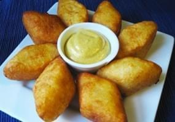

Productos y ofertas
Ofertas
Por ser la primera vez 25% en toda la tienda.
Jugo de yuca
Precio $2.500 pesos
Descripción:
1:libra de azúcar blanca.
1: lata de leche evaporada.
1:litro de leche de cartón.
9:clavo dulce.
1:cucharada de vainilla negra.
Preparación: pelar lavar y cortar la yuca luego poner a hervir en un recipiente con un
litro de agua y el azúcar con el clavo dulce después que ya este bien cocida la yuca dejar enfriar sacar los clavo dulce
procedemos a licuar.
La yuca con la leche y la poca agua que allá quedado incorpore la leche evaporada y cuele bien
agregue la vainilla listo Nota llevar a la nevera y servir bien frio.
Pan de bonos

Precio $3000 pesos
Descripción:
El pandebono (mal escrito fuera del Valle del Cauca como pan de bono) es un amasijo característico del departamento del
Valle del Cauca y que también se prepara en toda Colombia.
Aunque es llamado pan, no lo es en realidad. Se encuentra en
forma redonda y rosca, si bien el tradicional tiene forma de tira corta.
Enyucados
Precio $4000
Descripción:
El Enyucado es una receta tradicional de la costa atlántica de Colombia. Es una torta hecha con yuca rallada, queso, coco y anís.
El Enyucado es un plato dulce con una textura maravillosa.
Se puede servir como postre o acompañamiento para carnes y mariscos.
Caribañolas
Precio $2500
Descripción:
La carimañola o caribañola, pastel de yuca, yuca rellena, enyucado, croqueta de mandioca o boliño de mandioca es un
frito típico de algunos países latinoamericanos como o Brasil, Colombia, Costa Rica y Panamá.
Es un alimento a base de
masa de yuca, relleno de carne molida aliñada, queso fresco, pollo desmechado u otro relleno. En portugués se denomina
bolinho de mandioca.